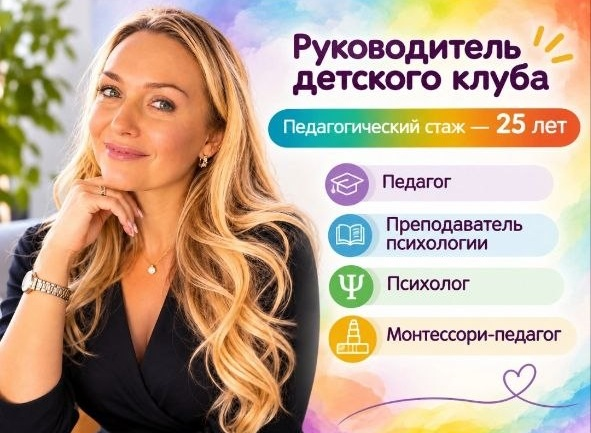

О руководителе
Иванова Екатерина Александровна
Руководитель детского клуба | Педагог-психолог | Монтессори-педагог
Педагогический стаж — 25 лет.
Занимаюсь развитием и воспитанием детей от 8 месяцев до 7 лет. Специализируюсь на раннем развитии, мягкой адаптации к детскому саду и подготовке к школе.
В работе сочетаю знания детской психологии, педагогический опыт и принципы системы Марии Монтессори.

Мой подход к работе
- Индивидуальный подход с учётом возраста и особенностей ребёнка.
- Развитие самостоятельности и уверенности в своих силах.
- Уважение к интересам и индивидуальному темпу развития.
- Развитие через игру, исследование и практическую деятельность.
- Доброжелательная атмосфера, безопасность и уважение к личности ребёнка.
- Партнёрское взаимодействие с родителями.
Образование и квалификация
- МГПОУ им. М. А. Шолохова — психология, квалификация «Преподаватель психологии» (2003).
- Профессиональная переподготовка по педагогике и психологии дошкольного образования.
- Специализированная подготовка по Монтессори-педагогике для детей от 8 месяцев до 3 лет и от 3 до 6 лет.
- Дополнительное обучение по дошкольному образованию, развитию познавательной сферы и оценке готовности к школе.
Моя главная задача — помочь каждому ребёнку раскрыть свои способности, стать самостоятельнее, увереннее в себе и с интересом познавать окружающий мир.